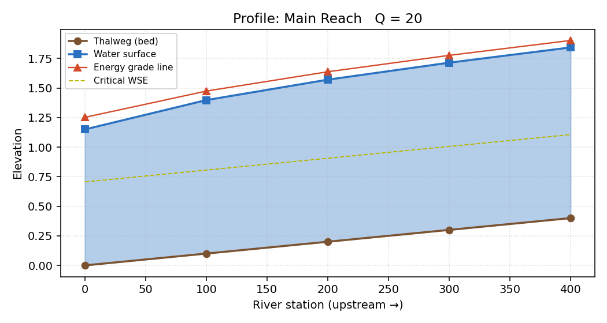
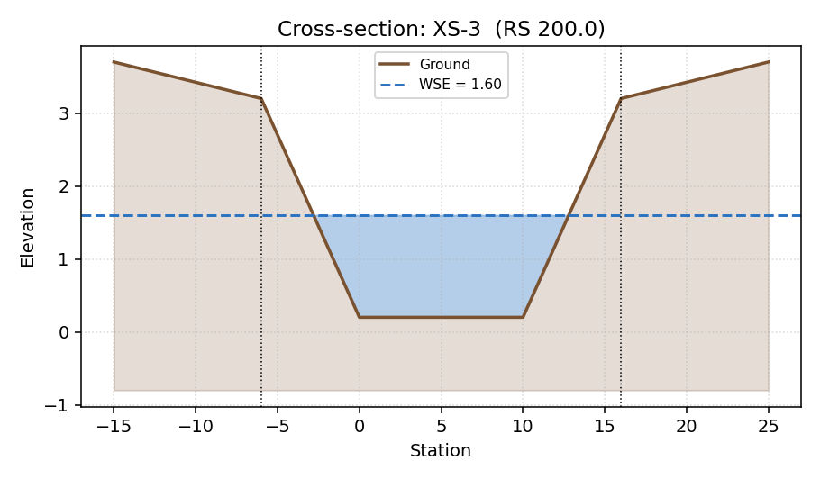

working name
MirrorZ-Hecras → rename pending before commercial launch (see
docs/pricing.md).
Open-channel hydraulics is taught in every civil-engineering program on Earth — and the only general-purpose tool students touch is HEC-RAS: free, immensely capable, and brutally intimidating on day one.
Result: a generation of engineers who can operate HEC-RAS but cannot read what it is doing. The math gets hidden behind buttons.
A native desktop app (macOS / Windows / Linux) that runs the same 1-D steady-flow math as HEC-RAS — Manning, conveyance, critical depth, standard-step — but exposes every step:
The MIT-licensed engine stays free forever. The packaged app is the paid product: signed installers, updates, support, branding.

Five-section sub-critical profile, solved in 18 ms. Thalweg, water surface, energy grade line, and critical WSE in one chart.

Edit any (station, elevation) point; the plot, wetted area, top width, and hydraulic radius update on every keystroke. After a profile run, the companion's post-run summary highlights:
Every flag is a deterministic rule with a textbook citation, not a language-model hallucination.
Hydraulics students & junior engineers, English-speaking, per academic year (US/CA/UK/AU/IN extrapolated from ASCE / ICE membership and intro-water-resources enrollment estimates).
Realistic 1-year paid-conversion ceiling at $29.99 without paid acquisition — 1–2% of reachable, matching analogous open-core + paid-app niches (HazardLab, EditorConfig Pro).
Civil-engineering departments worldwide that routinely assign HEC-RAS in undergrad water-resources courses — our beachhead for the classroom tier.
Honest framing: this is a niche education tool, not a venture-scale market. Plan reflects that. Upside comes from adjacency expansion (drainage, irrigation, stormwater), not from buying a market that doesn't exist.
| Tier | Price | For | Net per sale |
|---|---|---|---|
| Source | Free (MIT) | Anyone — engine, build-from-source. | — |
| App (one-time) | $29.99 | Junior engineers, working pros, hobbyists. | ~$25 |
| Student / Educator | $14.99 | .edu / GitHub Education verified. | ~$13 |
| Classroom (annual) | $199 / yr · 30 seats | Departments; branded headers, exercise pack. | ~$170 |
| Pro (v2) | $79 one-time | Batch automation UI, advanced reports. | ~$67 |
Net assumes Microsoft Store (15%) or Paddle (~5% + fees). Tiers, prices,
and feature gates already live in mirrorz/admin.py —
the storefront only needs a working key-issuance step.
No competitor ships a $30, Mac-native, "explain the math at every step" hydraulics app. The space exists because:
We have not asked for money yet — the deck reflects realistic conversion math, not optimistic spreadsheet trees. We are 30 days from first paid customer on the plan in slide 10.
| Quarter | Units sold | ARPU (net) | Revenue | Cumulative |
|---|---|---|---|---|
| Y1 Q1 | 40 | $22 | $880 | $880 |
| Y1 Q2 | 90 | $22 | $1,980 | $2,860 |
| Y1 Q3 | 180 | $22 | $3,960 | $6,820 |
| Y1 Q4 | 280 | $24 | $6,720 | $13,540 |
| Y2 (full) | 1,800 | $26 | $46,800 | $60,340 |
Assumes content marketing only (1 tutorial / month), no
paid ads, no salaried staff. Y2 ARPU rises with classroom tier mix
(5 departments × $199 = $1k baked in). Full model in
docs/earnings_projection.md.
What it would take to hit a real revenue number on hydraulics-niche economics. Strategy: premium first → loud public roadmap → verified-instructor viral loop → adjacent vertical (storm sewer / culvert sizing).
| Quarter | Triggers | Units | Revenue |
|---|---|---|---|
| Y1 Q1 | Launch tweet + HN front page + 1 viral demo video | 300 | $7,500 |
| Y1 Q2 | "Free for verified instructors" + 10 dept pilots | 800 | $22,000 |
| Y1 Q3 | Pro tier ships + first paid podcast tour | 1,400 | $45,000 |
| Y1 Q4 | 15 classrooms + Microsoft Store featured "made for education" | 2,200 | $70,500 |
| Y1 total | 4,700 | ~$145,000 | |
| Y2 (storm-sewer expansion) | Adjacent vertical lights up, 50 classrooms | 12,000 | ~$430,000 |
Honest caveat: Musk-mode requires a viral moment, a charismatic public face, and a willingness to ship loudly. Two of those are not free. Probability we hit it: ~15%. Probability we hit the baseline above: ~70%. Expected value sits in between.
USACE owns "HEC-RAS"; selling a paid product with "Hecras" in the name invites store rejection.
Mitigation: rename before launch
(one constant in mirrorz/__init__.py); candidates:
ChannelMirror, OpenReach, RiverStep, FlowProfile Studio.
If marketed for design (not learning) we inherit professional- liability costs no $30 tool can carry.
Mitigation: EULA + in-app banner already state "educational, not for regulatory or life-safety engineering." Marketing copy uses verbs learn / explore.
Our competition is literally free. Why pay?
Mitigation: we don't try to replace HEC-RAS. We sell understanding it — and a clean Mac/Linux experience HEC-RAS does not provide.
Honest cap is single-digit thousands of paid users.
Mitigation: kept costs near zero (no staff, no servers, no ads). Profitable at small scale.
This is a self-funded, indie-scale project. The right asks are not money:
If — and only if — Musk-mode Q4 milestones hit, we'd consider a small angel round (≤$100k) to fund the storm-sewer vertical expansion. Today's deck does not ask for it.
[Founder Name]
[email]
[website / repo]
Deck and full earnings model are checked in to the
repo at docs/deck/pitch.html and
docs/earnings_projection.md.